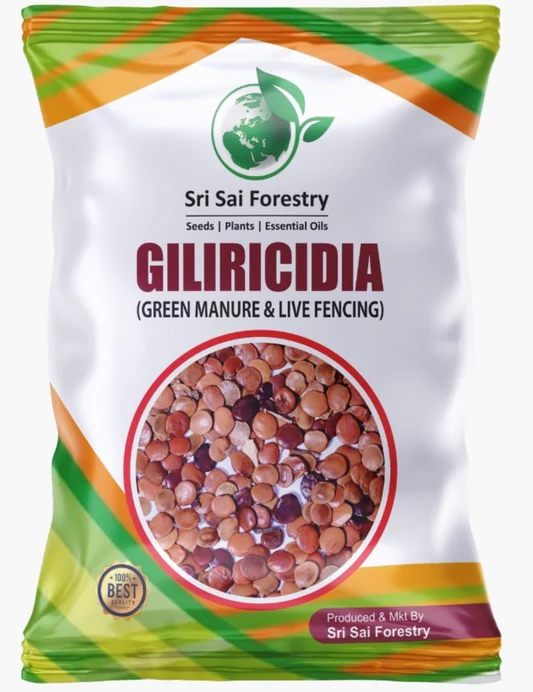
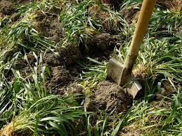
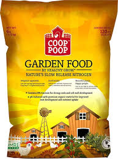

.jpeg)
Bio Organic Mature Comes alter for the Biological Fertilizers

This Mature created using the Fruits and vegatables

Another Manture created using the waste of Cow

Here this fertilizer created using the wastes

Fertilizer to boost the product instead that we have manure to produce high yield

Here in this kind of fertilizers we use to build the organic

Fertilizer to boost the product instead that we have manure to produce high yield

These are manuers which are created using the wastages.

Here in this kind of fertilizers we use to build the organic

By using this we will maintain the Eco-Friently solutions
GeoGreen which produced by the scientist to provide a better yield

Here in this kind of fertilizers we use to build the organic

Garden Gold used as a bio fertilizer which used to imporve yield
Another Manture created using the waste of Cow
Fertilizers created using the the wastages of animals
This Mature created using the Fruits and vegatables
Bio Organic Mature Comes alter for the Biological Fertilizers
Here in this kind of fertilizers we use to build the organic